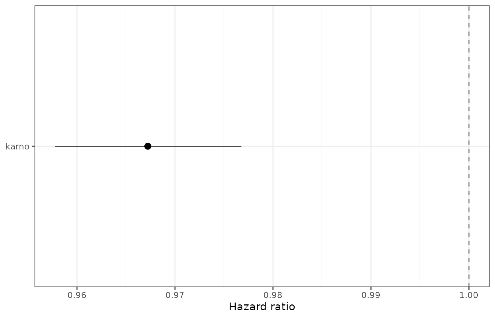

Maximum-likelihood fits support classical inference on the full Bernstein likelihood (not Cox partial likelihood).
Before you model
We compare a null model (intercept-only baseline) with a model including Karnofsky score — the same question as in the paper: is performance status worth including?
Fit and summarize
fit0 <- bpph(
Surv(time, status) ~ 1,
degree = 5,
data = veteran,
approach = "mle",
init = 0
)
fit1 <- bpph(
Surv(time, status) ~ karno,
degree = 5,
data = veteran,
approach = "mle",
init = 0
)
fit2 <- bpph(
Surv(time, status) ~ karno + factor(celltype),
degree = 5,
data = veteran,
approach = "mle",
init = 0
)
td <- tidy(fit1, conf.int = TRUE, exponentiate = TRUE)
td
#> term component estimate std.error statistic p.value conf.low
#> 1 karno coef 0.9672297 0.005010139 -6.650367 2.923629e-11 0.9577783
#> conf.high
#> 1 0.9767744
glance(fit1)
#> n nevent logLik approach model df statistic p.value rsq
#> 1 137 128 -724.8211 mle ph 6 42.74605 6.232769e-11 0.2680294
#> max.rsq AIC BIC
#> 1 0.9999814 1461.642 1479.162Visual check — forest plot
td$term <- factor(td$term, levels = rev(td$term))
ggplot(td, aes(x = estimate, y = term, xmin = conf.low, xmax = conf.high)) +
geom_vline(xintercept = 1, linetype = "dashed", color = "grey50") +
geom_pointrange(linewidth = 0.4) +
labs(x = "Hazard ratio", y = NULL) +
theme_bw()
Karnofsky hazard ratio with 95% CI.
Visual check — model comparison
cmp <- data.frame(
model = c("Null", "Karnofsky"),
AIC = c(AIC(fit0), AIC(fit1)),
logLik = c(as.numeric(logLik(fit0)), as.numeric(logLik(fit1))),
df = c(attr(logLik(fit0), "df"), attr(logLik(fit1), "df"))
)
cmp
#> model AIC logLik df
#> 1 Null 1502.388 -746.1941 5
#> 2 Karnofsky 1461.642 -724.8211 6
anova(fit0, fit1)
#> Analysis of Deviance Table
#>
#> Bernstein PH model (MLE), n = 137, degree = 5
#> Terms Resid. Df -2*LL Test Df Deviance Pr(>Chi)
#> 1 1 132 1492.4 1
#> 2 2 131 1449.6 1 1 42.746 6.233e-11 ***
#> ---
#> Signif. codes: 0 '***' 0.001 '**' 0.01 '*' 0.05 '.' 0.1 ' ' 1
anova(fit1, fit2)
#> Analysis of Deviance Table
#>
#> Bernstein PH model (MLE), n = 137, degree = 5
#> Terms Resid. Df -2*LL Test Df Deviance Pr(>Chi)
#> 1 1 131 1449.6 1
#> 2 2 128 1432.0 2 3 17.616 0.0005277 ***
#> ---
#> Signif. codes: 0 '***' 0.001 '**' 0.01 '*' 0.05 '.' 0.1 ' ' 1
anova(fit2)
#> Analysis of Deviance Table
#>
#> Bernstein PH model (MLE), n = 137, degree = 5
#>
#> Terms added sequentially (first to last)
#> Df Deviance Resid. Df -2*LL Pr(>Chi)
#> NULL 132 1492.4
#> karno 1 42.746 131 1449.6 6.233e-11 ***
#> factor(celltype) 3 17.616 128 1432.0 0.0005277 ***
#> ---
#> Signif. codes: 0 '***' 0.001 '**' 0.01 '*' 0.05 '.' 0.1 ' ' 1Pairwise comparisons report the likelihood-ratio statistic on the
simpler model row. A single fitted model produces a sequential table
(NULL, then each term in formula order), matching
survival::survreg conventions.
Degrees of freedom (visual)
df_tbl <- data.frame(
Quantity = c(
"logLik() / AIC df",
"summary() logtest df",
"anova() nested df diff"
),
fit0 = c(
attr(logLik(fit0), "df"),
"\u2014",
"\u2014"
),
fit1 = c(
attr(logLik(fit1), "df"),
summary(fit1)$logtest["df"],
attr(logLik(fit1), "df") - attr(logLik(fit0), "df")
),
Counts = c(
"Regression + length(bp.param)",
"Regression terms only",
"Total parameter difference"
)
)
df_tbl
#> Quantity fit0 fit1 Counts
#> 1 logLik() / AIC df 5 6 Regression + length(bp.param)
#> 2 summary() logtest df — 1 Regression terms only
#> 3 anova() nested df diff — 1 Total parameter differenceConfidence intervals and variance
confint(fit1, level = 0.95)
#> 2.5% 97.5%
#> karno -0.04313896 -0.02349957
estimates(), se(), and
extractAIC()
head(estimates(fit1))
#> karno gamma[1] gamma[2] gamma[3] gamma[4]
#> -0.0333192663 13.8798541589 11.4178267263 11.4086099336 0.0008454356
#> gamma[5]
#> 17.0616750768
extractAIC(fit1)
#> [1] 6.000 1461.642Null model
summary(fit0)
#> Call:
#> bpph(formula = Surv(time, status) ~ 1, degree = 5, data = veteran,
#> approach = "mle", init = 0, model = "ph")
#>
#>
#> log(gamma) gamma se(log(gamma)) z Pr(>z)
#> gamma[1] 7.5e-01 2.1e+00 1.5e-01 609.6 <2e-16 ***
#> gamma[2] -1.2e+00 2.9e-01 3.9e+00 3.2 7e-04 ***
#> gamma[3] 5.2e-01 1.7e+00 8.8e-01 85.0 <2e-16 ***
#> gamma[4] -1.2e+01 4.5e-06 5.2e+02 0.0 0.5
#> gamma[5] 1.8e-01 1.2e+00 7.0e-01 74.4 <2e-16 ***
#> ---
#> Signif. codes: 0 '***' 0.001 '**' 0.01 '*' 0.05 '.' 0.1 ' ' 1
#>
#> Loglik(model)= -746 Loglik(baseline only)= -746
#> n= 137, number of events= 128
logLik(fit0)
#> 'log Lik.' -746.1941 (df=5)